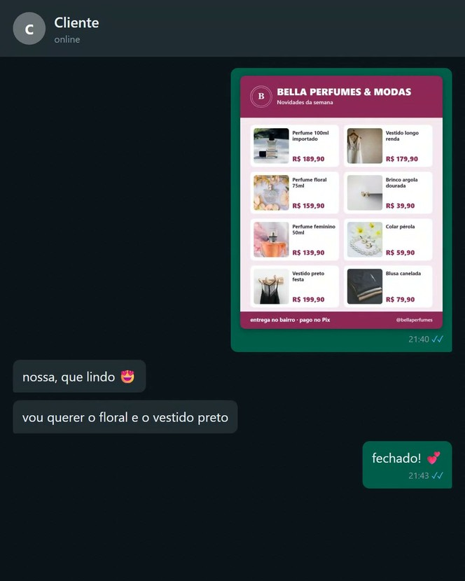

Seu catálogo pronto pra mandar no WhatsApp
Você ainda manda as fotos uma por uma?

Ela vê tudo de uma vez e já escolhe, sem você responder preço um por um.
Mandar foto solta e responder "quanto é?" o dia todo cansa,
e faz a freguesa desistir no meio.
Sai pronto do seu estoque: você não cadastra nada de novo
Um toque e vai pro WhatsApp, com a sua mensagem
Do jeito que loja grande manda: organizado e com preço
R$67
uma vez só, é seu pra sempre
O acesso entra junto com o do Controle.
Seu pagamento já está aprovado: é só 1 toque
Não gostou? 7 dias pra pedir de volta. Recusar não mexe na sua compra.